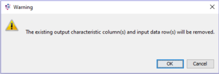
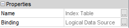
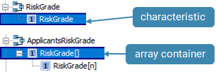
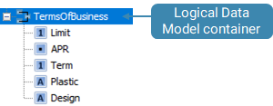
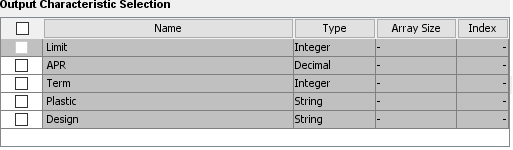
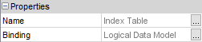
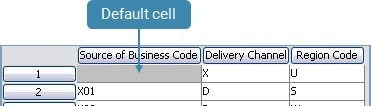

Index Tables
An Index Table can be thought of as a lookup table. When a value is passed in, the table looks up a matching value on the Input column and outputs the value(s) on the matched row. When no match is found then the value(s) on the default row are output.
To create an Index Table, the user adds an input characteristic and enters the unique values.
| A Logical Data Source characteristic or a Logical Data Model characteristic (or array container) can be added as the Input characteristic. This determines the type of Index Table created. |
Once an input characteristic and unique values have been entered, the user then adds the required output characteristic(s) and adds non-unique values to these.
| The same characteristic can not be used for the Input characteristic and the Output characteristic. |
| The type of input characteristic assigned will determine which type of output characteristic(s) can be added to the Index Table. For example, a Logical Data Source input characteristic can only have a Logical Data Source output characteristic. |
| Only one Logical Data Model can be assigned to the Index Tables Output columns. If the user attempts to add another Logical Data Model to the Output columns the software will display a warning message informing the user that the existing Output column(s) will be removed. |
| When the Input characteristic is changed from one based on a Logical Data Source to one that is based on a Logical Data Model or from one based on a Logical Data Model to one that is based on a Logical Data Source the software will display the following warning message:  |
|
Index Tables which have been defined against Logical Data Models can only be used in the following scripting components:
|
Where the same output value is associated with more than one input value it represents a grouping of those input values. A default cell is automatically created; the values in the cells adjacent to this will be returned if no value is found in the input characteristic.
| If the user tries to enter duplicate values in the input characteristic, the duplicates will be indicated. An Index Table is invalid if it contains duplicate input values. The user must remove any duplicates in the input characteristic values before attempting to test or deploy the Index Table. |
The Index Table editor enables the user to paste values from an external spreadsheet. There is no need to expand the Index Table to fit the size of the paste as the Index Table editor will automatically expand the table to fit the values being pasted from the external spreadsheet. This makes creating of Index Tables with large numbers or rows and columns quick, simple and accurate.
| The Index Table can contain a maximum of 150,000 records. If this number is exceeded then an error message will be displayed and those additional records will not be captured. |
| The locale of the user's PC will be used to ensure the values entered into the Index Table are the correct format. Should the locale be changed, the displayed date format and other formats such as decimal symbol and digit grouping symbol will also be automatically updated. |
An Index Table consists of:
- an input characteristic where unique values have been entered
- one or more output characteristics where non-unique values have been entered
- default cell where the values in the cells adjacent to the default cell are returned if no value is found in the input characteristic
An Index Table can be created from the Explorer window.
| You will only be able to add a component type that has been allowed for the selected folder. If it is not allowed it will not be listed and therefore cannot be created. See the Manage allowed component types help page for more information on this. |
To create an Index Table
- From the Explorer window right click at the required folder level and select Add component.
- Select Index Table.
- In the Create component dialog enter the name of the Index Table.
- Select the Open new components in component editor checkbox.
- Click OK.
The Index Table Editor will open allowing you to edit an Index Table.
The Index Table name will be listed in the Explorer window under the selected folder level. The component is identified by the icon.
If you do not wish the editor to open, keep the checkbox de-selected. From the Explorer window right click on the Index Table and select Open.
To edit an Index Table
When an Index Table needs to be created that contains a large number of values, it is recommended that the user uses Excel to make the process easier and to ensure accuracy. When values are copied from Excel into an Index Table, the table will automatically expand to fit the values being pasted from Excel.
The first row in the Index Table contains the default values. It is recommended that the values in Excel follow the same structure. When these values are copied, into an empty Index Table, the Index Table pastes the values and assumes that the first cell is the default cell, so ignores the contents of this cell.
In the example below, "Default" has been entered into this cell in Excel to inform the user which values are the default values. The value "Default" is automatically ignored when copied into the Index Table.
To create an Index Table using Excel
- Within Excel copy the cells you wish to paste into the Index Table.
- With the Index Table open in the studio, click the icon.
The Index Table editor will automatically expand the table to fit the values being pasted from Excel.
No characteristics will be assigned to the columns. - Assign either Logical Data Source or Logical Data Model characteristics to the Index Table.
- Add the values to the default cell in the Index Table.
The Index Table will now be available to test.
An Index Table consists of an input and one or more output characteristics to which values are entered.
To create a Logical Data Source Index Table
- With the Index Table editor open, right click on the Input column and select Assign Logical Data Source Characteristic.
The Select Characteristic dialog will open. - In the Search field
 type the word or part of a word that makes up the name of the characteristic.
type the word or part of a word that makes up the name of the characteristic.
The Select Characteristic dialog will focus in on a particular characteristic or set of characteristics that match this word. - Select the characteristic you require.

| If the Select Characteristic dialog is displaying the characteristics in a tree view, the Logical Data Source will need to be fully expanded to see all the characteristics that match the word(s). |
- Click OK.
The Select Characteristic dialog closes and the characteristic you have selected is added. - Right click on the Output column and select Assign Logical Data Source Characteristic.
The Select Characteristic Dialog will open. - Repeat steps 2 to 4.
An Output column will be added to the Index Table.
| The Index Table is now a Logical Data Source Index Table. |
- To add additional Output columns to the Index Table, right click on an Output column and select Insert After Column or Insert Before Column.
A new column will be added to the Index Table in the position you require. - Repeat step 5 to 6 to assign a Logical Data Source characteristic to this column.
- Repeat steps 7 to 8 to add the required Output columns.
| The Properties window for the Index Table will provide information on the type of Index Table that has been created:  |
Values can now be added to the characteristics.
An Index Table consists of an input and one or more output characteristics to which values are entered.
To assign Logical Data Model characteristics to the Index Table
- With the Index Table editor open, right click on the Input column and select Assign Logical Data Model Characteristic.
The Select Characteristic dialog will open. - In the Search field type the word or part of a word that makes up the name of the characteristic.
The Select Characteristic dialog will focus in on a particular characteristic or set of characteristics that match this word.
| If the Select Characteristic dialog is displaying the characteristics in a tree view, the Logical Data Model will need to be fully expanded to see all the characteristics that match the word(s). |
- Select the characteristic you require.
|
Only leaf level characteristics can be selected as the Input column.  |
- Click OK. The Select Characteristic dialog closes and the characteristic you have selected is added.
| The Index Table is now a Logical Data Model Index Table. |
- Right click on the Output column and select Assign Logical Data Model Characteristic.
The Select Characteristic Dialog will open. - Repeat step 2 to focus in on a particular Logical Data Model
- Select the Logical Data Model you require.

- Click OK. The Select Characteristic dialog closes and the Select Output Characteristics dialog is displayed.
- Using the checkboxes select the charcteristic that will be used as the Output column.
| If you select the top checkbox, all the characteristics will be added as Output columns to the Index Table. |
- Click OK. The Select Output Characteristics dialog will close and the Output column(s) will be added to the Index Table.
|
Only one Logical Data Model can be assigned to the Index Tables Output columns. If you attempt to add another Logical Data Model to the Output columns the software will display the following warning message and the existing Output column(s) will be removed. |
- To add additional Output columns to the Index Table using the same Logical Data Model, right click on an Output column and select Insert After Column or Insert Before Column.
A new column will be added to the Index Table in the position you require. - Repeat steps 6 to 7 to locate the Logical Data Model and open the Select Output Characteristics dialog.
The Select Output Characteristics dialog will open with the characteristics that have not been assigned to the Index Table available for selection.
- When a characteristic that contains an array is selected, the Select Output Characteristic dialog allows you to specify the index of the array by typing a value in the Index field.
| Ranges are not supported in the Index field. |
| If a characteristic has already been assigned as the Input column, the software will not allows the user to select the same characteristic. |
- Click OK. The Select Output Characteristics dialog will close and the Output column(s) will be added to the Index Table.
| The Properties window for the Index Table will provide information on the type of Index Table that has been created:  |
Values can now be added to the characteristics.
An Index Table consists of an input characteristic and one or more output characteristics. Values need to be entered into the input and output characteristic. The values entered into the input characteristic must be unique. It is recommended that the user uses Excel to make the process easier and to ensure accuracy.
To add values to the Index Table
- With the Index Table editor open, double click in a specific cell and type the appropriate value.
Values that have been added to the input characteristic that are not unique, or values that do not fit into the bounds of the characteristic assigned to the column will have the following icon displayed next to them.
icon displayed next to them. - Amend the values as required.

| If the user tries to enter duplicate values in the input characteristic, the duplicates will be indicated. An Index Table is invalid if it contains duplicate input values. The Index Table user must remove any duplicates in the input characteristic before attempting to test or deploy the Index Table. |
An Index Table contains a default cell where the values in the cells adjacent to the default cell are returned if no value is found in the input characteristic.
To add values to the default cell
- With the Index Table editor open, double click in the cells that are adjacent to the default cell and type the appropriate values.
|
The following is an example of how the default cell works.  When the Index Table is processed, if no value is found in the input characteristic, X and U will be returned to the Delivery Channel and Region Code output characteristics. |
The number of rows in an Index Table can be altered.
To change the number of rows in an Index Table
- With the Index Table editor open, right click on the row and select Add Row to add an empty row to the Index Table.
- Right click and select Delete Row to delete a whole row and its contents from the Index Table.
Should you wish to just delete the contents and not the whole row use, right click on the cell and select Clear Row.
To delete a row from an Index Table
- With the Index Table editor open, right click on the row and select Delete Row.
The row will be removed from the Index Table.
To delete continuous rows from an Index Table
-
With the Index Table editor open, with your cursor, select a continuous number of rows.
-
Right click on any of the selected rows and select Delete Row.
All the rows will be deleted from the Index Table.
To delete alternate rows from an Index Table
-
With the Index Table editor open, and with the Ctrl key of your keyboard selected, with your cursor, select the green arrow
 for the rows you wish to delete.
for the rows you wish to delete. -
Right click on any of the selected rows and select Delete Row.

{kind=link}
{kind=link}
{kind=link}
{kind=link}
{kind=link}
{kind=link}
{kind=link}
{kind=link}
{kind=link}
{kind=link}
{kind=link}
{kind=link}
All the selected rows will be deleted from the Index Table.
An Index Table consists of an input characteristic and one or more output characteristics. Values need to be entered into the input and output characteristic. The values entered into the input characteristic must be unique.
To copy the contents of an Index Table in to Excel
- With excel open, in Design Studio with the Index Table editor open, select all the values you wish to copy.
- In the studio, click the icon.
- Select a cell in Excel, right click and select Paste.
The contents of the Index Table will be pasted into Excel.
No characteristic names that have been assigned to the columns will be pasted into Excel.
{kind=link}
The contents of the Index Table will now be available to manipulate in Excel.
Once the user has successfully created an Index Table, the user will be able to test it using the Test Project component to carry out a Batch test or by using Interactive Tester.
The user can test an Index Table either by manually typing in data for the input characteristic referenced in the Index Table or by performing a test against a known data source.
To perform an interactive test
To test an Index Table manually by entering data into the relevant field for the input characteristic, use the Interactive Tester.
To perform a batch test
To test an index using data from a .csv file, from the Explorer window, right click on the component and select New Test Project to use the Batch Tester.